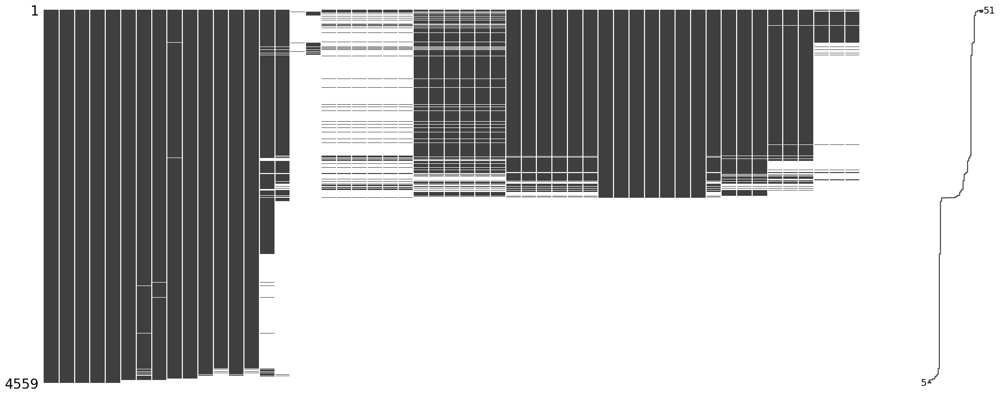

Missing Values¶
Relatório geral¶
+----+------------------------------------------+-----------------------+-----------------------------+ | | Nome Feature | Qtde Missing Values | Proportion Missing Values | +====+==========================================+=======================+=============================+ | 54 | Growth regulator total (kg por ha) | 4558 | 99.98 | +----+------------------------------------------+-----------------------+-----------------------------+ | 53 | Crop stage max growth regulators applied | 4558 | 99.98 | +----+------------------------------------------+-----------------------+-----------------------------+ | 16 | Protein pre-harvest (%) | 4541 | 99.61 | +----+------------------------------------------+-----------------------+-----------------------------+ | 17 | Protein post-harvest (%) | 4357 | 95.57 | +----+------------------------------------------+-----------------------+-----------------------------+ | 18 | Fertilizer pre-sowing (kg por ha) | 4237 | 92.94 | +----+------------------------------------------+-----------------------+-----------------------------+ | 23 | Zn pre-sowing (kg por ha) | 4237 | 92.94 | +----+------------------------------------------+-----------------------+-----------------------------+ | 22 | S pre-sowing (kg por ha) | 4237 | 92.94 | +----+------------------------------------------+-----------------------+-----------------------------+ | 21 | K pre-sowing (kg por ha) | 4237 | 92.94 | +----+------------------------------------------+-----------------------+-----------------------------+ | 20 | P pre-sowing (kg por ha) | 4237 | 92.94 | +----+------------------------------------------+-----------------------+-----------------------------+ | 19 | N pre-sowing (kg por ha) | 4237 | 92.94 | +----+------------------------------------------+-----------------------+-----------------------------+ | 51 | Insecticide total (kg por ha) | 4143 | 90.88 | +----+------------------------------------------+-----------------------+-----------------------------+ | 50 | Crop stage max insecticide applied | 4143 | 90.88 | +----+------------------------------------------+-----------------------+-----------------------------+ | 52 | Insecticide applications (#) | 4143 | 90.88 | +----+------------------------------------------+-----------------------+-----------------------------+ | 29 | Zn at-sowing (kg por ha) | 2638 | 57.86 | +----+------------------------------------------+-----------------------+-----------------------------+ | 28 | S at-sowing (kg por ha) | 2638 | 57.86 | +----+------------------------------------------+-----------------------+-----------------------------+ | 26 | P at-sowing (kg por ha) | 2638 | 57.86 | +----+------------------------------------------+-----------------------+-----------------------------+ | 24 | Fertilizaer at-sowing (kg por ha) | 2638 | 57.86 | +----+------------------------------------------+-----------------------+-----------------------------+ | 25 | N at-sowing (kg por ha) | 2638 | 57.86 | +----+------------------------------------------+-----------------------+-----------------------------+ | 27 | K at-sowing (kg por ha) | 2638 | 57.86 | +----+------------------------------------------+-----------------------+-----------------------------+ | 49 | Fungicide applications (#) | 2600 | 57.03 | +----+------------------------------------------+-----------------------+-----------------------------+ | 48 | Fungicide total (kg por ha) | 2600 | 57.03 | +----+------------------------------------------+-----------------------+-----------------------------+ | 47 | Crop stage max fungicide applied | 2600 | 57.03 | +----+------------------------------------------+-----------------------+-----------------------------+ | 15 | Malt barely yield (kg por ha) | 2386 | 52.34 | +----+------------------------------------------+-----------------------+-----------------------------+ | 46 | Herbicide applications (#) | 2384 | 52.29 | +----+------------------------------------------+-----------------------+-----------------------------+ | 45 | Herbicide total (kg por ha) | 2384 | 52.29 | +----+------------------------------------------+-----------------------+-----------------------------+ | 44 | Crop stage max herbicide applied | 2384 | 52.29 | +----+------------------------------------------+-----------------------+-----------------------------+ | 34 | S after-sowing (kg por ha) | 2382 | 52.25 | +----+------------------------------------------+-----------------------+-----------------------------+ | 43 | Crop stage max fert applied after sowing | 2382 | 52.25 | +----+------------------------------------------+-----------------------+-----------------------------+ | 35 | Zn after-sowing (kg por ha) | 2382 | 52.25 | +----+------------------------------------------+-----------------------+-----------------------------+ | 30 | Fertilizer after-sowing(kg por ha) | 2382 | 52.25 | +----+------------------------------------------+-----------------------+-----------------------------+ | 31 | N after-sowing (kg por ha) | 2382 | 52.25 | +----+------------------------------------------+-----------------------+-----------------------------+ | 32 | P after-sowing (kg por ha) | 2382 | 52.25 | +----+------------------------------------------+-----------------------+-----------------------------+ | 33 | K after-sowing (kg por ha) | 2382 | 52.25 | +----+------------------------------------------+-----------------------+-----------------------------+ | 40 | S total (kg por ha) | 2263 | 49.64 | +----+------------------------------------------+-----------------------+-----------------------------+ | 42 | Crop stage max fert applied | 2263 | 49.64 | +----+------------------------------------------+-----------------------+-----------------------------+ | 41 | Zn total (kg por ha) | 2263 | 49.64 | +----+------------------------------------------+-----------------------+-----------------------------+ | 38 | P total (kg por ha) | 2263 | 49.64 | +----+------------------------------------------+-----------------------+-----------------------------+ | 39 | K total (kg por ha) | 2263 | 49.64 | +----+------------------------------------------+-----------------------+-----------------------------+ | 37 | N total (kg por ha) | 2263 | 49.64 | +----+------------------------------------------+-----------------------+-----------------------------+ | 36 | Fertilizer total (kg por ha) | 2263 | 49.64 | +----+------------------------------------------+-----------------------+-----------------------------+ | 14 | Harvest date | 1553 | 34.06 | +----+------------------------------------------+-----------------------+-----------------------------+ | 11 | Crop sown last FW | 175 | 3.84 | +----+------------------------------------------+-----------------------+-----------------------------+ | 13 | Tillage method last FW | 175 | 3.84 | +----+------------------------------------------+-----------------------+-----------------------------+ | 10 | Crop sown last SS | 100 | 2.19 | +----+------------------------------------------+-----------------------+-----------------------------+ | 12 | Tillage method last SS | 100 | 2.19 | +----+------------------------------------------+-----------------------+-----------------------------+ | 8 | Seed rate (kg por ha) | 64 | 1.4 | +----+------------------------------------------+-----------------------+-----------------------------+ | 6 | Variety | 59 | 1.29 | +----+------------------------------------------+-----------------------+-----------------------------+ | 9 | Seed treated? | 57 | 1.25 | +----+------------------------------------------+-----------------------+-----------------------------+ | 7 | Area sown (ha) | 46 | 1.01 | +----+------------------------------------------+-----------------------+-----------------------------+ | 5 | Sowing date | 40 | 0.88 | +----+------------------------------------------+-----------------------+-----------------------------+ | 1 | Region | 0 | 0 | +----+------------------------------------------+-----------------------+-----------------------------+ | 4 | Status | 0 | 0 | +----+------------------------------------------+-----------------------+-----------------------------+ | 3 | Grower field | 0 | 0 | +----+------------------------------------------+-----------------------+-----------------------------+ | 2 | Grower | 0 | 0 | +----+------------------------------------------+-----------------------+-----------------------------+ | 0 | Country | 0 | 0 | +----+------------------------------------------+-----------------------+-----------------------------+
